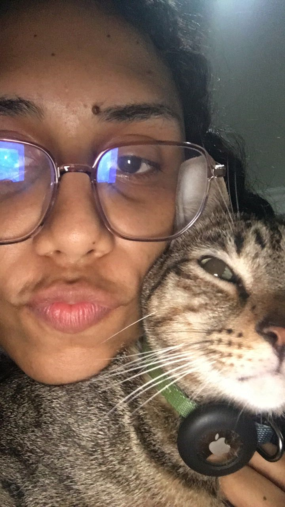

Im doing this at this way because its interesting.
I hope that you liked the yellow flowers, remember its never too late flowers.
You must be thinking why Im writing in English, well im tryng something new.
Look I wanted to write you something about a time ago, I just wanted to tell yout that I already was the man that you wanted, i change because i feel you wanted and someday I told you that when you change for goo its good no matter for who.
In those months when I started to feel different that was the beginning of the change in my life at that momento youe helped me a lot and i still need that help but you just decide that the better for me is to grown alone when i didnt have any else.
YOU were my motivativon you were all that I needed, but you just left me and I forgive you because i like to belive that you love me in a way that I cant understand
I never needed this what I really need is someneone who I can trust and cry in his shoulder when I need, someone who no matter what supports me and I was that person in your life. Why you cant be that to me
Another thing that I want to say is that you remember that time when we were working together in the tank and I just wanted to go home because I was bored to be ther and you tell to me that you were surprised that I had not been bored with you, the truth is that I never wanted a work like that i always liked to be fancy, to take care of my nails, hair, etc. I never wanted that work I like to be in a computer doing great things.
Anyway, I see that you made Miguel's party I hope you are well speaking about feelings, I dont know if you already tell to all de family about us, if is that way well I hope you are well and strong about all this.
The reason of this is only beacause I already finisshed the book and I want to tell you, GRACIAS, I learn a lot of things if some day you want to talk about this just text me.


Well I guess this is all Ill add this photo because I love it so much.
